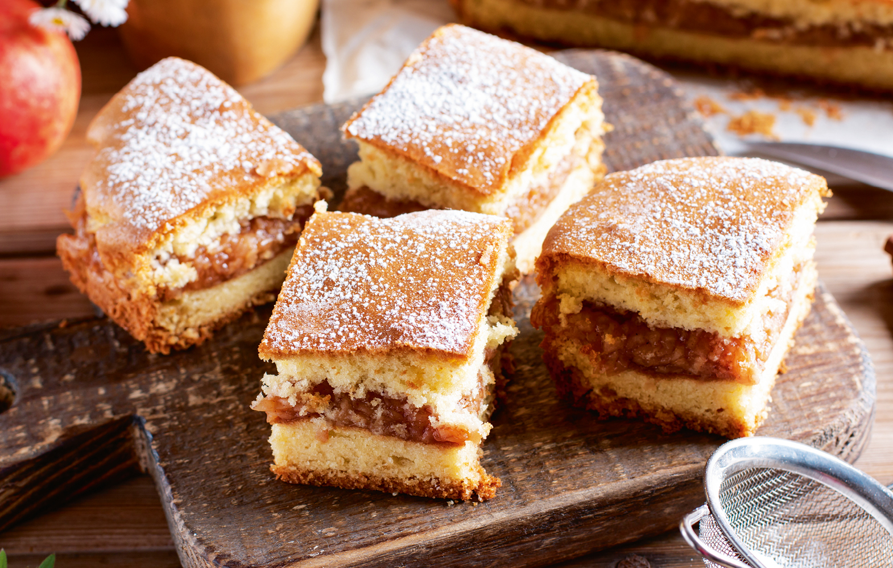

Hungarian Apple Pie

Apple pie is a simple but divine dessert, an unrivaled delicacy. You can always find something new by searching
for old apple pie recipes if you dig a little deeper. Some people stick to a family recipe, but add some extra
ingredients to the dough, while others change the filling. One thing is certain: no matter which version goes
into the oven, the end result always brings a smile to the face.
Ingredients
- 2 kg apples
- 150g of powdered sugar
- 1 tsp of cinnamon
- 2 tbsp of lemon juice
- 500g of all-purpose flour
- 7g of baking powder
- 7g of vanilla sugar
- 150g of sugar
- 250g of butter
- 2 eggs
- 2 tbsp of breadcrumbs
- an egg for brushing
Steps
- Peel, core and grate apples.
- Add powdered sugar, cinnamon and lemon juice. Mix well. Leave to rest for 10 minutes. Squeeze the apple
flesh and set aside.
- Mix flour, baking powder, sugar and vanilla sugar. Add the cold butter and crumble with the flour mixture.
Add eggs and knead into a homogeneous dough. Wrap in plastic wrap. Refrigerate for 1 hour.
- Cut the dough into halves. Roll them out to baking sheet size (about 30x25cm). Place one half on an oiled
and floured baking sheet. Sprinkle the dough with breadcrumbs. Place the apple filling on top and spread
evenly. Place another half of the dough on top and level.
- Brush the top with beaten egg and poke holes in the top dough with a fork. If you like, you can add a
pattern to the dough, for example by scratching stripes on the surface.
- Bake in a preheated oven at 180°C (350°F) for 25-30 minutes. Let it cool and enjoy!